Colorizing the Prokudin-Gorskii Photo Collection
Aligning three filtered glass plate exposures into a single color photograph.
Introduction
The goal of this project was to reconstruct color photographs from the Prokudin-Gorskii glass plate collection. What I found especially exciting about this project is how far ahead of his time Prokudin-Gorskii was. Long before modern color photography became common, he was already thinking about color in a way that feels surprisingly close to a computer vision technique: capture the same scene through different color filters and then combine those measurements to reconstruct color.
Each digitized glass plate contains three grayscale exposures of the same scene taken through blue, green, and red filters, stacked vertically in the order B, G, R. At first, the three images look almost identical and completely grayscale, which makes it especially interesting that together they actually contain all the information needed to represent color.
My task was to separate the three channels, align them correctly, and combine them into a single RGB image. Since the exposures were taken separately, the channels are slightly shifted relative to each other. I used the blue channel as my reference and aligned the green and red channels to it before stacking the three channels into the final color image.
Single-Scale Alignment
I first implemented a simple exhaustive search for the smaller JPEG images. For every possible displacement within a search window of \([-15,15]\) pixels in both the x and y directions, I shifted the channel and measured how well it matched the blue reference image.
For the matching metric, I used Normalized Cross-Correlation, or NCC. NCC first subtracts the mean intensity from each image and normalizes it using its L2 norm. It then computes the dot product between the two normalized images:
A higher NCC score means that the two images have more similar intensity patterns. This is useful for this problem because corresponding regions across different color channels do not necessarily have exactly the same brightness.
For every possible displacement, I calculated the NCC score and kept the displacement with the highest score.
I also ignored the outer 10% of each image while calculating the alignment score. The glass plates often contain black, white, or irregular borders that are not part of the actual scene. In addition, np.roll wraps pixels from one side of the image to the opposite side when applying a shift. Ignoring the outer region prevents these border artifacts from having too much influence on the alignment metric.
Single-Scale Results
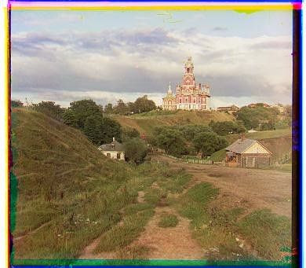

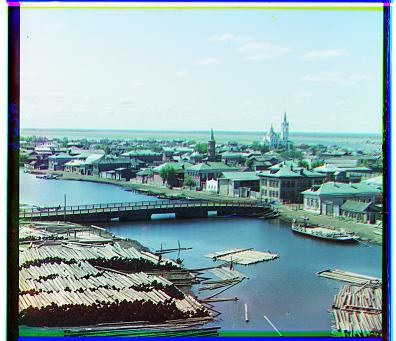
| Image | Green Offset (x, y) | Red Offset (x, y) |
|---|---|---|
| Cathedral | [G OFFSET] | [R OFFSET] |
| Monastery | [G OFFSET] | [R OFFSET] |
| Tobolsk | [G OFFSET] | [R OFFSET] |
The exhaustive search worked well for the low-resolution images because the required displacements were relatively small and could be found within the \([-15,15]\) search window.
Multi-Scale Image Pyramid
The same approach becomes much more expensive for the high-resolution TIFF images. At full resolution, the correct displacement can be tens or even hundreds of pixels away. Searching exhaustively over such a large range would require evaluating a huge number of possible shifts.
To make the search faster, I implemented a coarse-to-fine image pyramid.
At each pyramid level, I downsample both images by a factor of two using anti-aliasing. I continue shrinking the images until they are small enough that the displacement can be found using the original exhaustive search.
Suppose the displacement found at the coarse level is
When moving back to an image that is twice as large, the corresponding displacement should be approximately
I use this doubled displacement as the center of a smaller search window and refine the estimate at the higher resolution. This process continues until the algorithm reaches the original image resolution.
The overall process is therefore:
This makes it possible to recover large displacements without performing an expensive exhaustive search over the entire full-resolution image.
Multi-Scale Pyramid Results
For the required baseline results, I used NCC on the original grayscale pixel values together with the multi-scale pyramid.

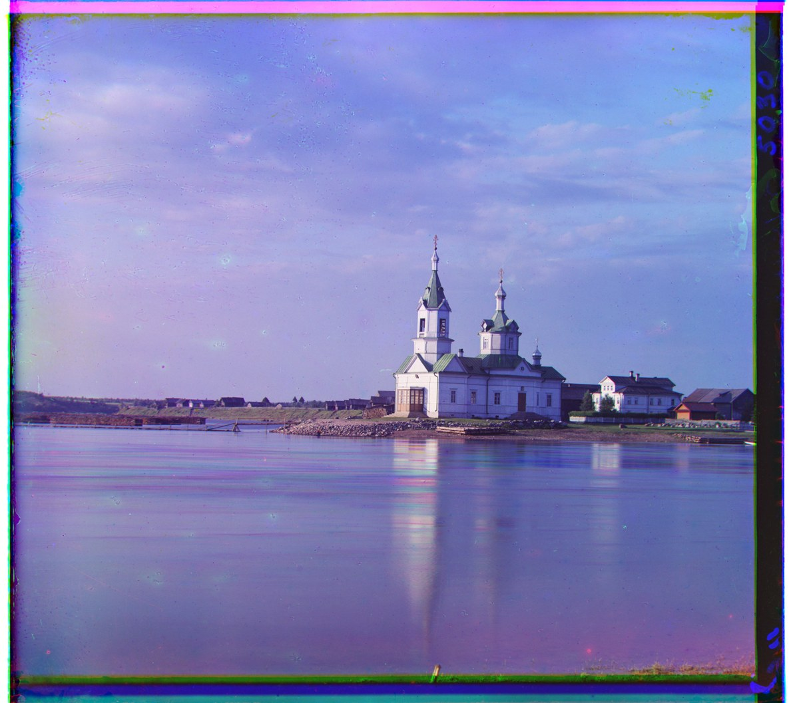
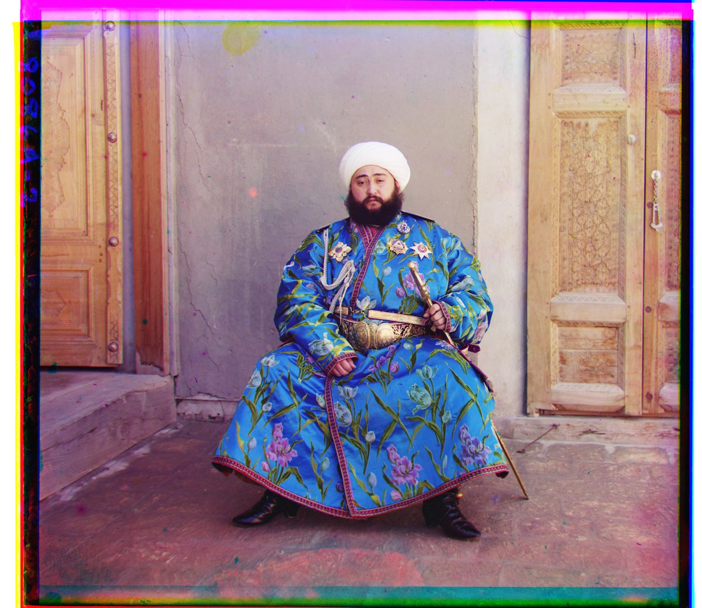
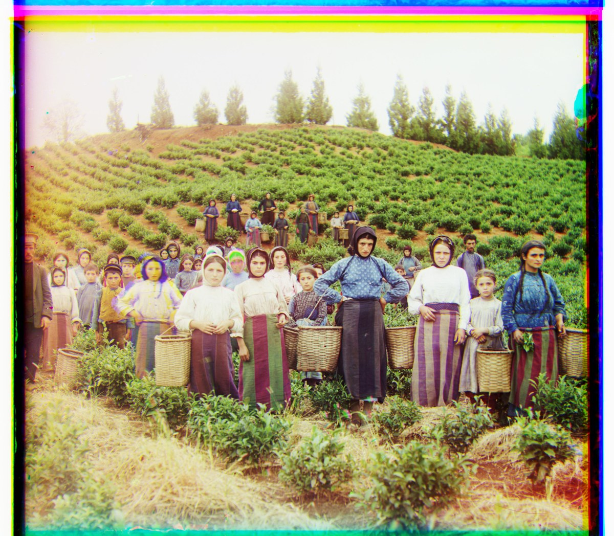
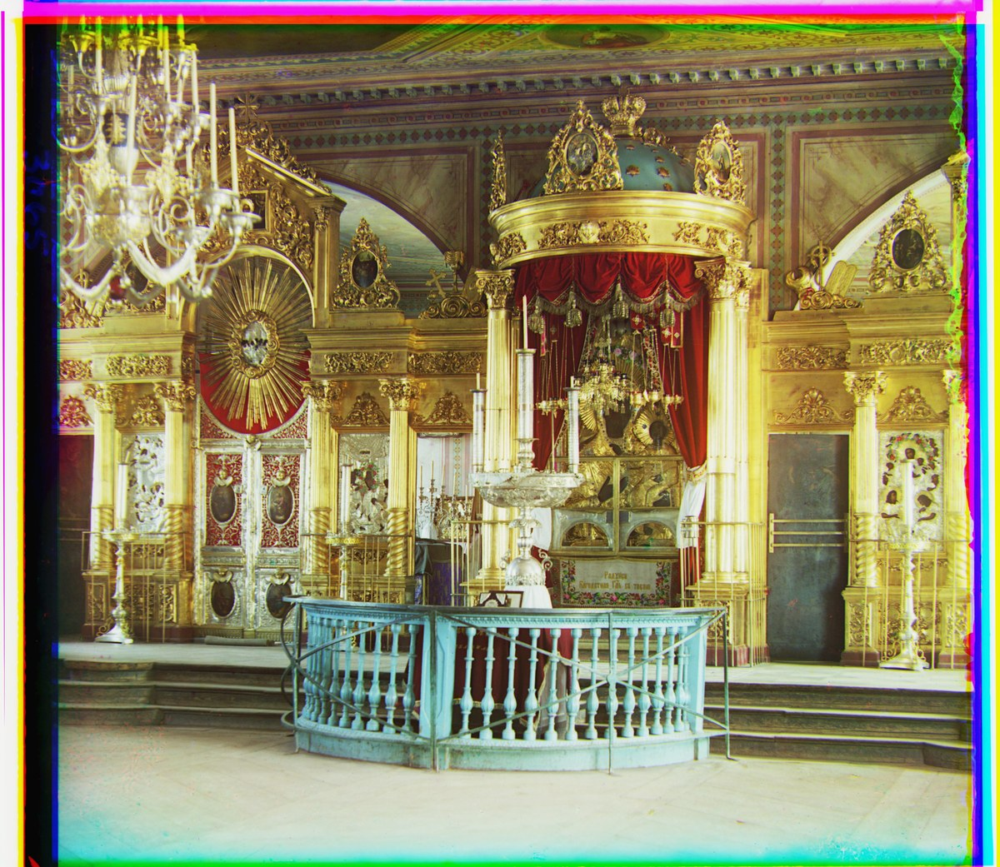
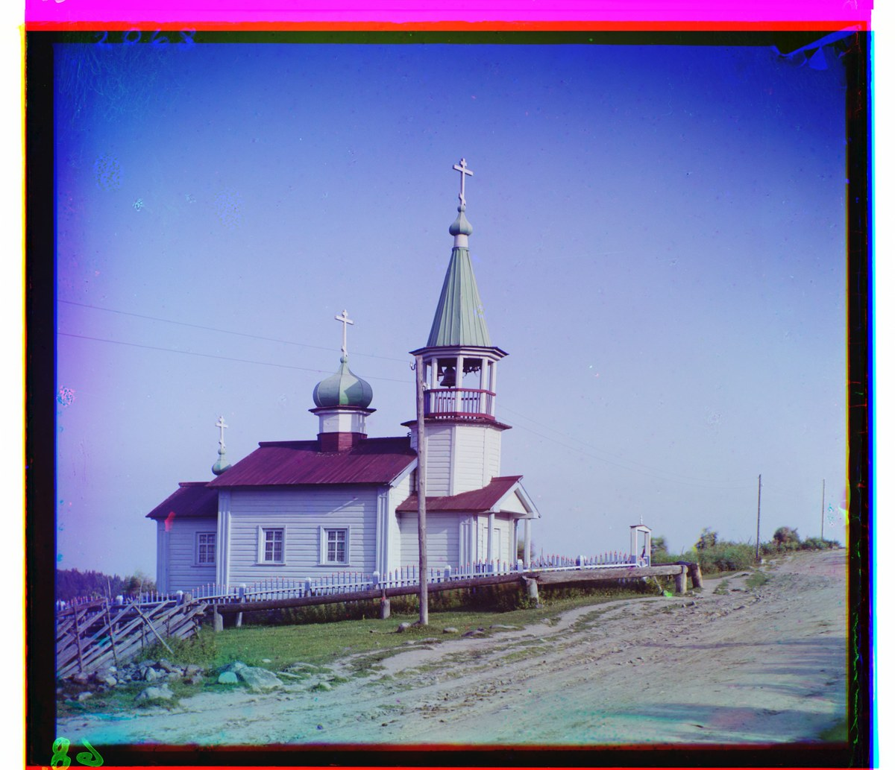
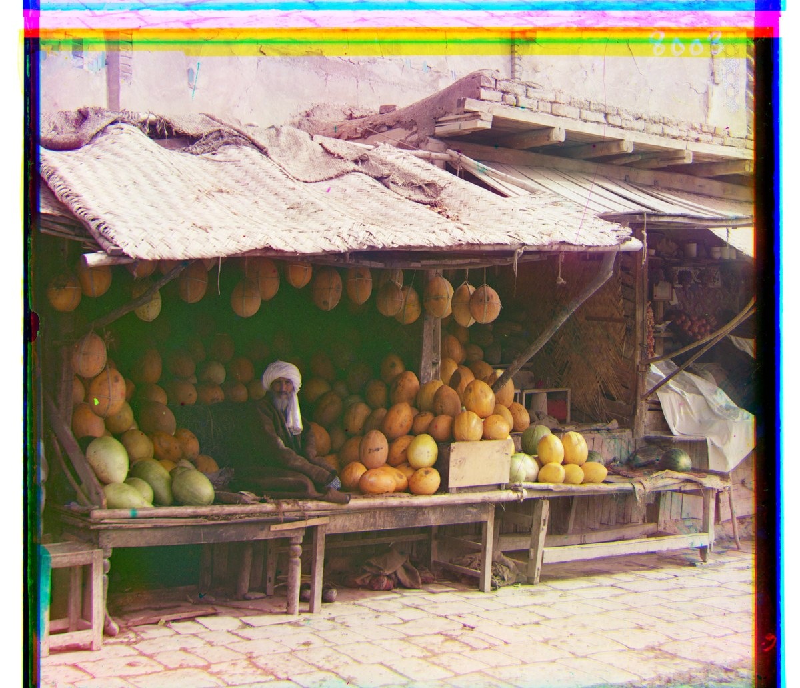
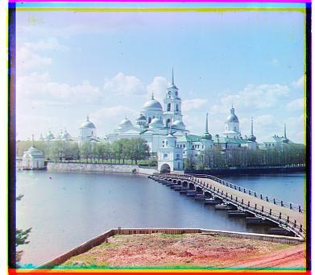
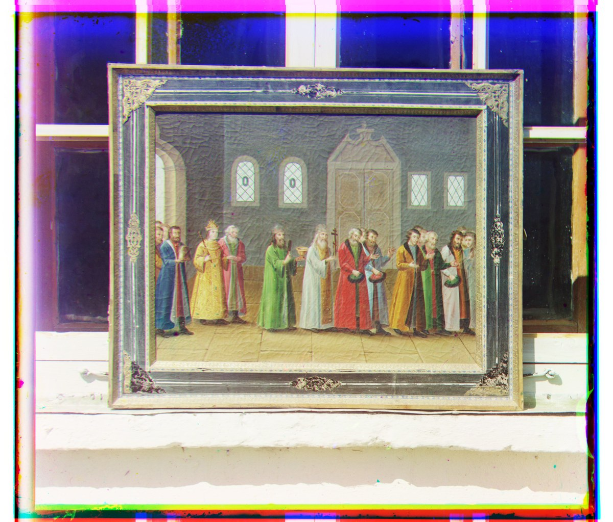
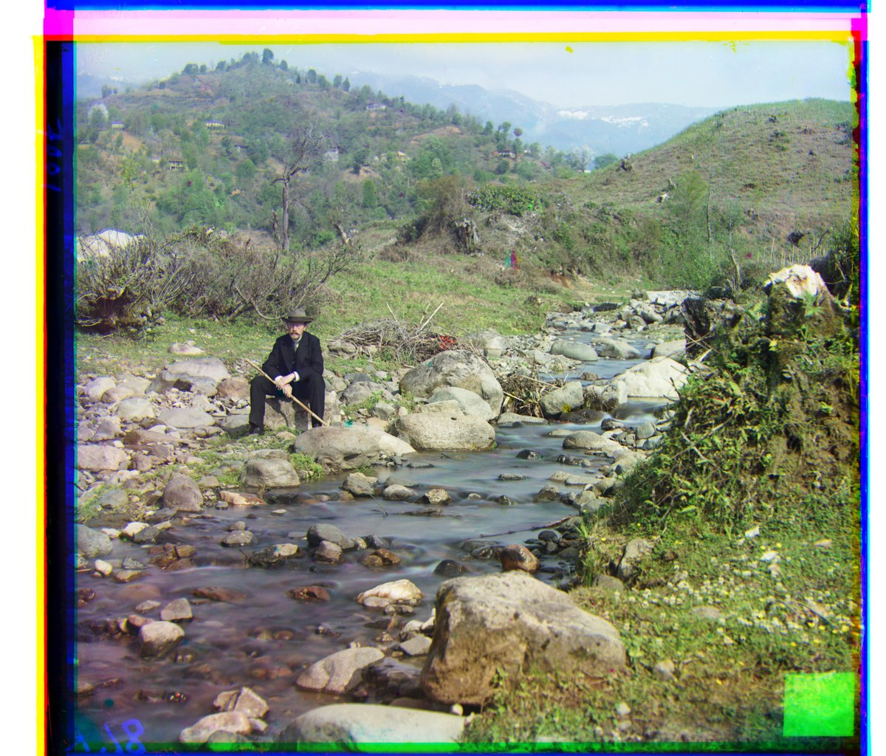
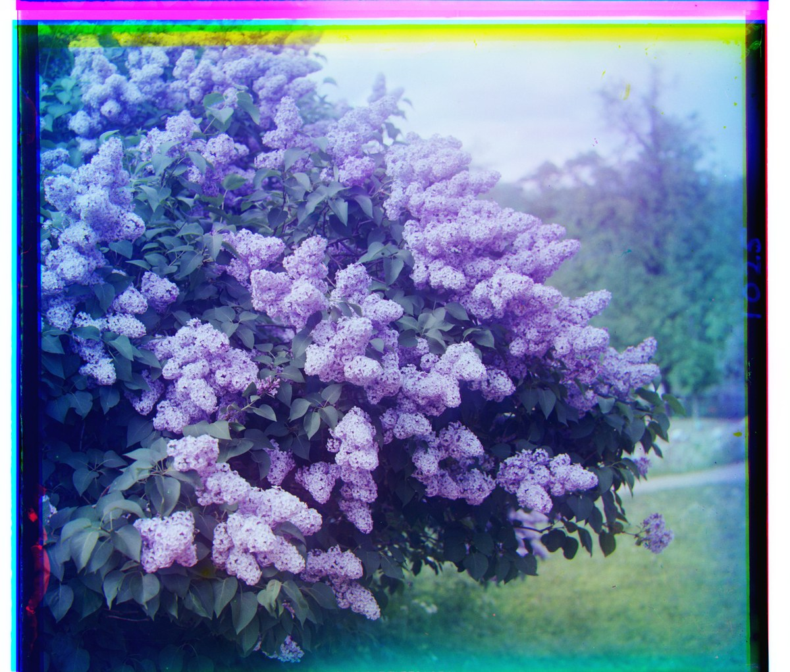
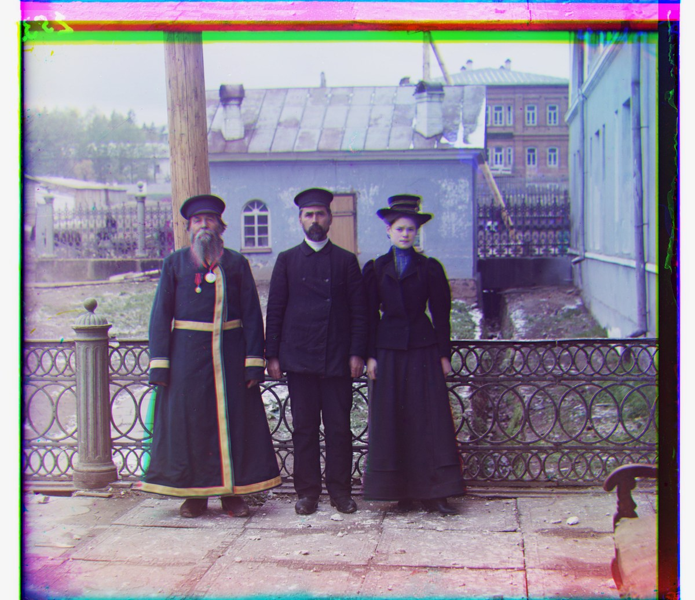

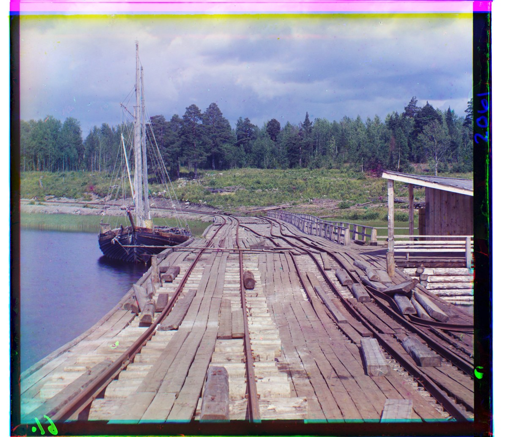
| Image | Green Offset (x, y) | Red Offset (x, y) |
|---|---|---|
| Cathedral | [ ] | [ ] |
| Church | [ ] | [ ] |
| Emir | [ ] | [ ] |
| Harvesters | [ ] | [ ] |
| Icon | [ ] | [ ] |
| Ilemselga | [ ] | [ ] |
| Melons | [ ] | [ ] |
| Monastery | [ ] | [ ] |
| Religious Painting | [ ] | [ ] |
| Self Portrait | [ ] | [ ] |
| Siren | [ ] | [ ] |
| Three Generations | [ ] | [ ] |
| Tobolsk | [ ] | [ ] |
| Wharf | [ ] | [ ] |
The pyramid greatly improved efficiency on the large images because the algorithm could first identify the approximate alignment at a very low resolution and then make increasingly small corrections as it moved back toward the original resolution.
Why Some Images Are Harder to Align
One part of this project that I found especially interesting was realizing that the three grayscale exposures are not actually expected to have the same brightness values.
Each exposure was taken through a different color filter. An object that strongly reflects red light may appear very bright in the red exposure while appearing much darker in the blue exposure. Those differences are exactly what eventually allow us to reconstruct the color of the object.
This also creates a problem for alignment. Even if the red and blue images are geometrically aligned, the same region of the scene may contain very different pixel intensities. NCC helps by removing overall brightness and scale differences, but for strongly colored objects the actual intensity structure across channels can still be quite different.
The Emir image is a particularly interesting example of this problem.
Edge-Based Alignment
To make the alignment less dependent on raw brightness, I experimented with aligning the channels using edges instead of the original pixel values.
For each grayscale image, I first calculated the horizontal and vertical brightness gradients:
I then computed the gradient magnitude at every pixel:
This produces another grayscale image where strong boundaries have large values and relatively uniform regions have values close to zero.
The motivation behind this approach is that the brightness of an object can change significantly between the red, green, and blue exposures, but the physical boundary of that object usually remains in the same location. A piece of clothing, for example, may appear much brighter through one filter than another, but the outline of the person's shoulder or hat still occurs at the same point in the scene.
Instead of asking whether two regions contain the same brightness values, edge-based alignment asks whether their structural boundaries occur in the same places.
I used the edge images only to determine the displacement. After finding the best shifts using NCC on the edge maps, I applied those shifts to the original grayscale red and green channels and then constructed the RGB image normally.
This allowed me to use structural information for alignment without changing the actual content of the final photograph.
Raw-Pixel NCC vs. Edge-Based NCC
Raw-Pixel NCC
Green offset: [ ]
Red offset: [ ]
Edge-Based NCC
Green offset: [ ]
Red offset: [ ]
For difficult images, edge-based matching can improve the alignment because it focuses more on shared scene structure and less on how bright a particular color appears through each filter.
Additional Prokudin-Gorskii Images
I also tested my algorithm on three additional images from the Prokudin-Gorskii collection.
| Image | Green Offset (x, y) | Red Offset (x, y) |
|---|---|---|
[IMAGE 1] | [ ] | [ ] |
[IMAGE 2] | [ ] | [ ] |
[IMAGE 3] | [ ] | [ ] |
These images were processed using the same alignment pipeline without manually tuning the parameters for each photograph.
Conclusion
I found this project especially cool because it changed the way I thought about what a color image actually represents. When looking at the original glass plate, I just saw three extremely similar grayscale photographs stacked on top of each other. It is surprising that once those three images are interpreted as separate red, green, and blue measurements and aligned correctly, they suddenly become a full-color photograph.
It was also really interesting to think about why the same object can have such different brightness values across the three exposures. Those differences come directly from the color filters and from how much red, green, or blue light different objects reflect. In a way, the differences that make the alignment problem harder are also exactly what contain the information needed to reconstruct color.
Exploring edge detection made this even more interesting. Instead of only comparing brightness values, I could use the locations where brightness changes and focus on the actual structure of the scene. This gave me another way of thinking about what information in an image is useful for matching.
Overall, it was really satisfying to see relatively simple computer vision ideas—RGB channels, similarity metrics, image pyramids, and gradients—come together to reconstruct photographs captured more than a century ago. Prokudin-Gorskii's approach already contained the basic idea of separating color into different measurements, and it was especially exciting to use modern computational techniques to finally put those measurements back together.